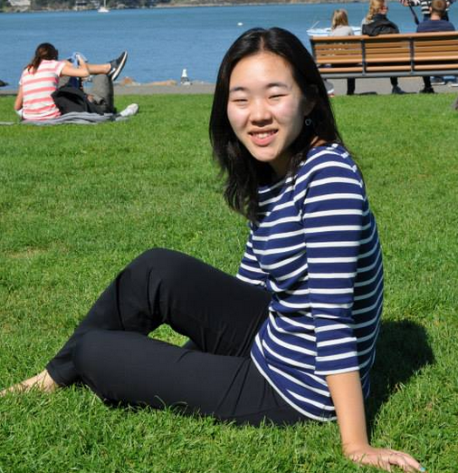
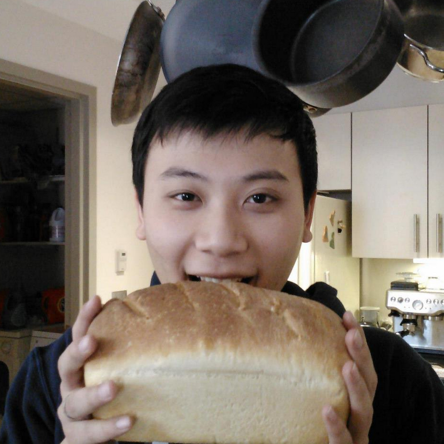
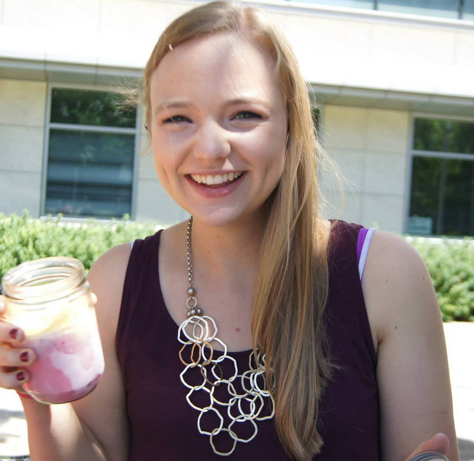

Ariana Chae
Ariana Chae is a junior majoring in engineering with a concentration in computing. She has a special interest in education, and has experience interning in the ed-tech space as well as performing research on educational change processes. Having traveled all of 2.5 miles from home to attend Olin College, Ariana is unique in that she has attended preschool, elementary, middle and high school, and now college all in the same town. With a cup of coffee in one hand and her cell phone in the other, she likes to stay busy and connected. Ariana is excited to explore the intersection between computing and design with her HFID team over the course of the semester.

Chris Lee
Chris Lee is a junior (class of 2015), pursuing a degree in engineering with a concentration in computing. From all the way in southern California, Chris treasures the community at Olin College and values the the time he has to spend growing as an engineer among peers. Though he has only recently declared as E:Computing, he particularly enjoys coding in his free time and wishes to expand his skill set. Nothing sounds better to Chris than sitting under a tree on a nice, sunny morning, sipping some hot coffee, and coding. During the course of this project, Chris aims to thoroughly investigate the process of designing an eye-catching, intuitive, and meaningful user interface.
Lisa Park
Lisa Park is a senior pursuing the Electrical and Computer Engineering major, focusing on software. Although she is not a bioengineer, she aims to apply her skills in the biomedical engineering field, and is in fact a rare premedical student at Olin College of Engineering. From her research experience working with frustrating 3D modeling programs at Children's Hospital of LA, she became interested in designing better biomedical programs with intuitive user interfaces. Lisa hails from southern California, bringing with her her Korean culture and love of Asian food. Much of Lisa's free time is spent doing arts and crafts, archery, and reading.
